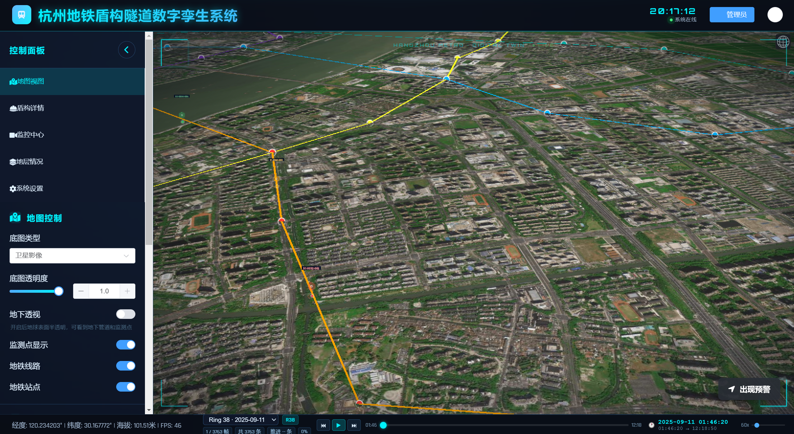
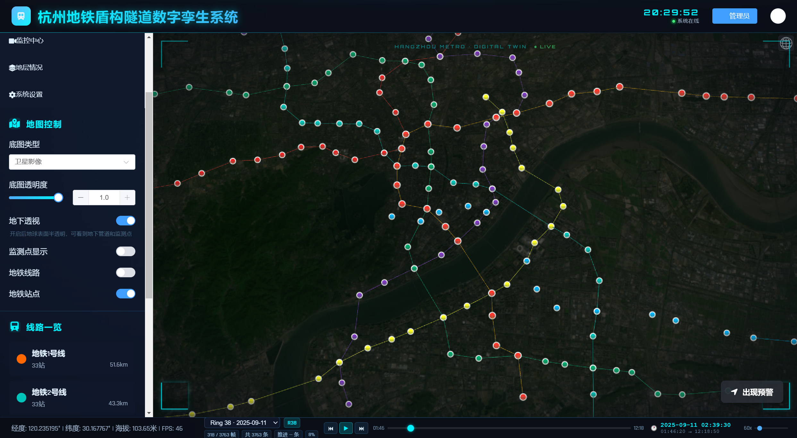
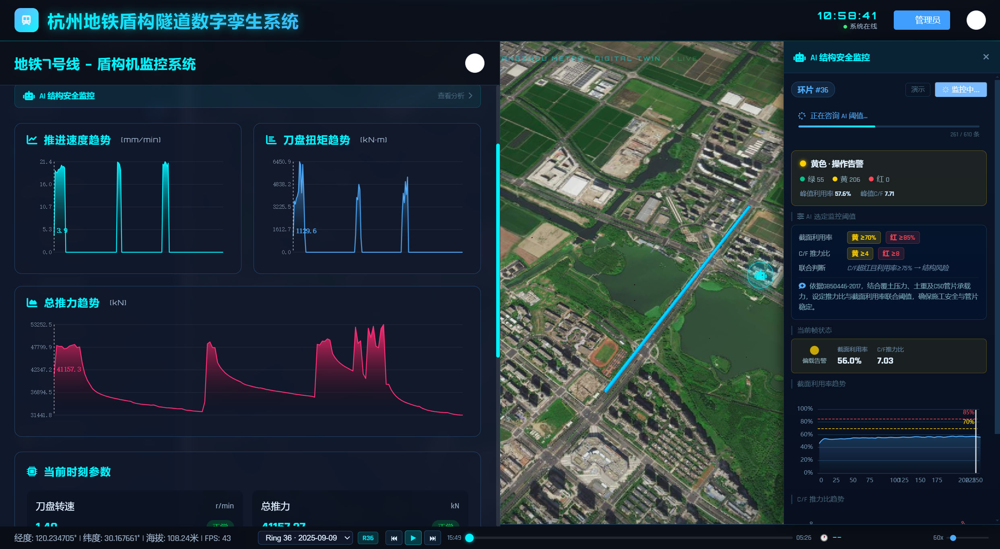
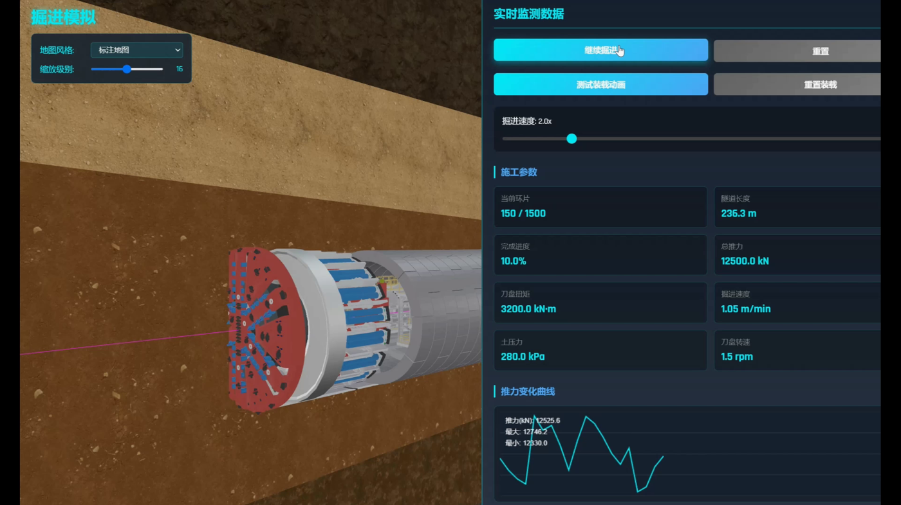
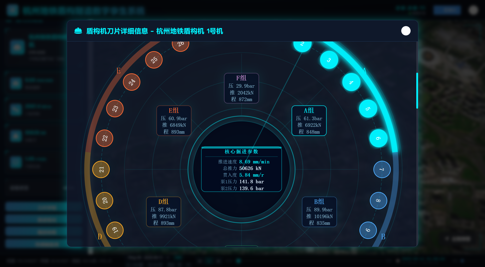
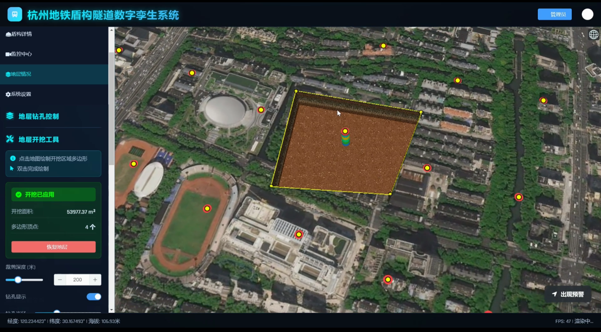
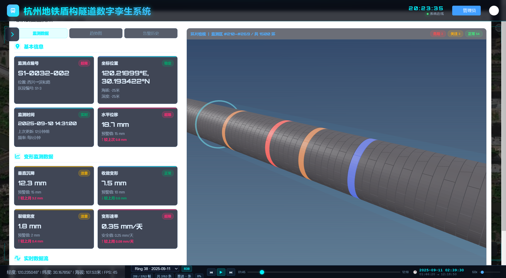

Case Study / 脱敏展示
盾构隧道数字孪生与监测分析原型
面向地铁盾构施工数字化管理、结构安全监测和工程展示场景，独立设计并开发一套可演示数字孪生原型， 将三维空间对象、盾构时序数据、传感器监测、地层钻孔、环片运维和分析结果解释整合到同一产品体验中。
说明：页面截图与演示视频均基于脱敏历史样例数据及模拟展示数据生成，不包含敏感原始数据、合作单位内部资料或未公开分析模块细节。

Product Thinking
复杂工程场景的产品化挑战
这个项目的重点不是简单把数据“画出来”，而是把分散的工程对象、时间过程、空间关系和分析依据组织成可理解、可复盘、可解释的产品体验。
用户与场景
- 课题组研究人员需要把复杂工程数据转化为可展示、可复盘的系统原型
- 合作单位相关人员需要快速理解施工状态、监测结果和分析依据
- 未来工程管理人员需要在空间视图中定位异常状态，并回看对应施工过程
真实痛点
- 工程数据来源分散，CSV、传感器、GeoJSON、GLB、钻孔数据难以统一理解
- 线路、盾构、地层、管片、监测点之间缺少统一空间视图
- 盾构推进参数是时序过程，静态表格难以支撑复盘分析
- AI/分析模块如果只给结论，用户难以判断依据是否可信
- 复杂项目信息压缩后容易丢失约束，影响后续开发和功能验收
产品方案
Prototype Modules
核心功能模块展示
原型围绕“看清空间关系、回放施工过程、关联监测数据、解释分析依据”组织核心模块，展示复杂工程数据如何被转化为可浏览、可复盘、可验证的产品体验。

三维主场景
统一展示地铁线路、站点、盾构区间、监测点与地下空间对象，作为数字孪生原型的空间底座。

盾构监控与分析侧栏
把施工趋势、结构化指标、阈值状态和解释文本放在同一视图中，作为后续分析模块接入的展示样例。

掘进状态模拟
表达盾构机、地层环境、推进参数与施工曲线之间的细粒度关系，帮助用户理解掘进状态变化。

时序回放与趋势分析
围绕推进速度、总推力、刀盘响应等指标，支持按施工时间回看参数变化和异常区间。

地层与钻孔建模
将钻孔、地层面和开挖区域转化为空间对象，辅助理解盾构机与地层环境之间的关系。

环片运维与传感器监测
展示监测区段、环片状态、传感器点位和关键变形指标，用于结构安全状态解释和后续运维分析。
AI Coding Observation
AI Coding 在复杂项目中的使用体验观察
项目开发过程中，我深度使用 Claude Code / Codex 辅助需求拆解、组件开发、后端接口、数据处理和调试。 这些观察来自真实复杂代码库，而不是简单 demo。
我的使用流程
- 需求拆解将系统拆分为三维场景、时序回放、地层模块、监测视图、分析侧栏等任务
- 上下文组织提供项目结构、关键文件、字段含义、接口契约和业务规则
- 代码生成辅助开发 Vue 组件、FastAPI 接口、Python 数据脚本和可视化逻辑
- 调试修复根据报错、页面表现、接口返回结果和数据字段进行多轮修正
- 人工验收检查字段、链路、交互和工程逻辑是否符合预期，避免只看代码可运行
真实痛点
上下文容易断裂
多文件任务中，AI 容易只改当前文件，遗漏 API、composable、组件和字段之间的联动。
领域字段理解不稳定
盾构环号、推进段、A-F 分区推力、结构利用率等字段有工程含义，需要反复补充背景。
缺少任务级验收闭环
AI 能生成代码，但很少主动说明改了哪些文件、影响哪些页面、应该验证哪些交互。
压缩后信息缺失
为了适配上下文长度，压缩项目说明后容易丢失关键约束，导致后续生成结果偏离真实业务逻辑。
如果我是 AI Coding 产品 PM
- 代码库上下文地图：帮助 AI 理解主链路、依赖关系和字段契约
- 任务级开发计划：修改前说明影响范围、风险点和需要同步的文件
- 验收面板：生成 diff 摘要、验证清单和潜在问题提示
这个项目让我理解到：AI Coding 的核心价值不只是生成代码，而是在复杂业务项目中帮助开发者稳定理解上下文、控制变更风险，并完成可验证的任务闭环。
Demo Video
脱敏演示视频
视频用于展示系统主流程、核心模块和产品设计思路。由于项目涉及工程数据与内部资料，演示内容仅使用脱敏历史样例数据及模拟展示数据。